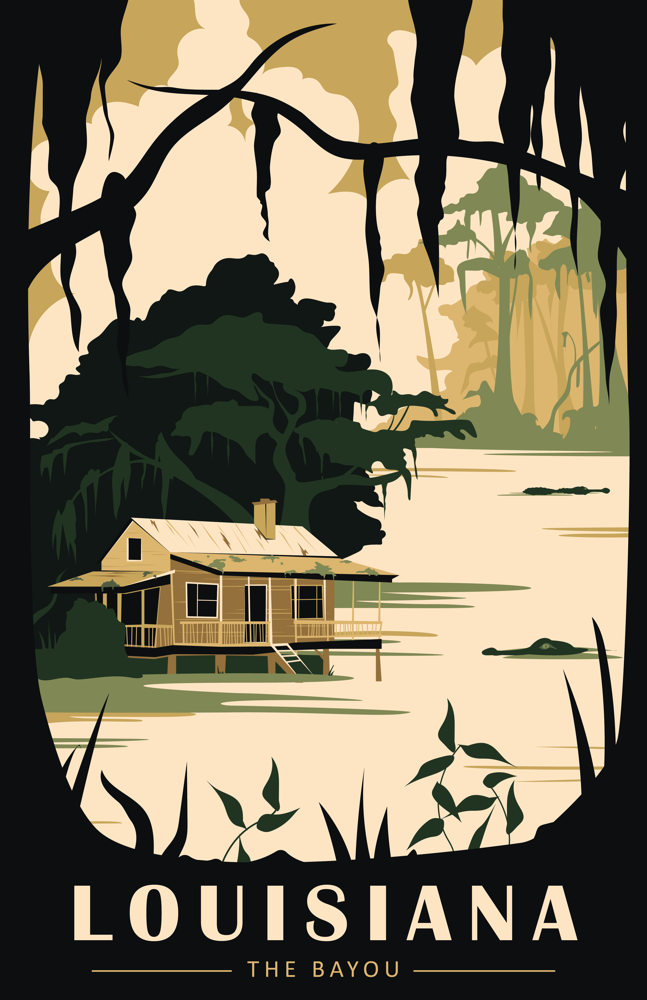
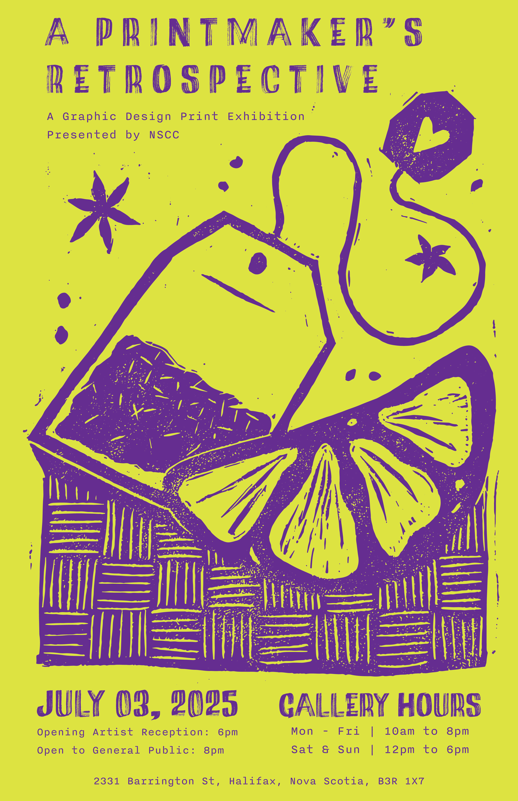
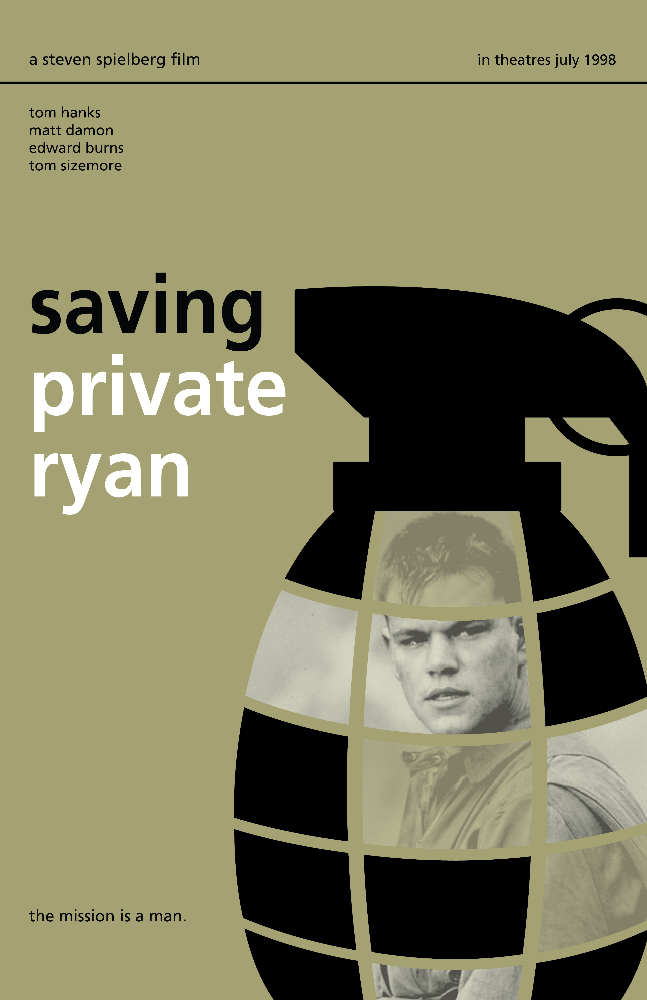

The Bayou, Louisiana
Digital Illustration, S1
An emulation of a travel poster found online using the same colours and general style but with a different location.

An emulation of a travel poster found online using the same colours and general style but with a different location.

A mock printmaking exhibition poster. The main graphic is a scan of a linocut print. The text and colour manipulation is done digitally.

A poster of one of of our favorite movies done in the Swiss Typograpic Style.